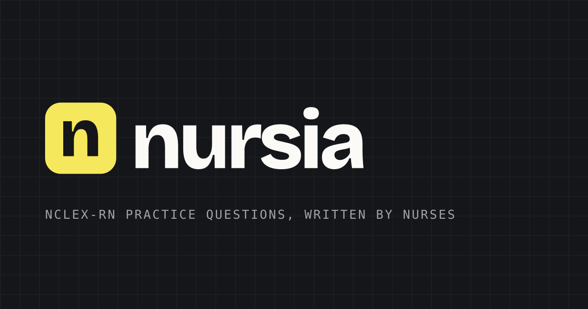

Foundations · 02
Logo
The word set in Bricolage Grotesque ExtraBold at −0.045em, with the full stop in scrub teal. The full stop is the whole identity: it is the only colour in the mark, and it is the reason the wordmark reads as a statement rather than a name.
Primary
The horizontal wordmark

This is the default and covers most uses. Ink letters, teal full stop, on any light ground. All the files are generated from one script with the letterforms converted to outlines, so nothing depends on the font being installed anywhere.
Never re-set the wordmark by typing it in Bricolage. Use the files.
Every cut, and when it is the right one
nursia-wordmark.svg — primary
Ink letters, teal full stop. Any light ground.
nursia-wordmark-reverse.svg — on ink

The full stop turns highlighter yellow, because teal dies on dark.
nursia-wordmark-black.svg — one colour
Faxes, forms, single-plate print, anything that cannot hold two inks.
nursia-wordmark-white.svg — on photography
Photography, video lower-thirds, any mid-tone ground.
nursia-wordmark-teal.svg — brand alone
Where the brand has to carry with no context — merch, stamps, embroidery.
nursia-stacked.svg — square placements
Wordmark over NCLEX PRACTICE QUESTIONS. Directory listings, sponsor walls, print, anywhere the brand is unfamiliar. A reverse cut exists too.
Small sizes
The app mark
The whole word goes illegible below about 80px, so the square mark keeps the n and the full stop — the letter it starts with and the one piece of colour anyone remembers.
nursia-mark.svg
Rounded square, ink ground. Avatars, app icons, favicons.
nursia-mark-light.svg
Paper ground, for dark UI chrome.
nursia-mark-square.svg
No corner radius, for platforms that mask their own.
favicon-32.png
The one raster size that still matters. PNGs at 192, 512 and 1024 sit alongside.
Social
The OG card

1200×630, ink ground, with the highlighter rule. Wired up as the site's default OG image; a PNG sits next to the SVG for platforms that will not render vector.
Rules
Clear space and minimum size
Clear space = the height of the n
On all four sides. The supplied files already carry it, so placing one flush against a container edge still leaves the margin.
Minimum size
90px wide on screen, 22mm in print. That is the wordmark at its floor, shown actual size. Below it, switch to the square mark — do not shrink the word.
The full stop
It is teal on light and highlighter yellow on dark. It is never ink, and never the same colour as the letters — except in the deliberate one-colour cuts, which exist precisely because some surfaces cannot hold two inks.
Misuse
Never
Stretch or condense it.
Never
Rotate or arc it.
Never
Add a shadow, glow or outline.
Never
Re-colour the letters or move off the two approved full-stop colours.
Never
Put the colour wordmark on a mid-tone photo or ground. Use the white cut.
nursia.
Never
Re-type it in Bricolage and tighten the tracking yourself.
Engineering
Wired into the app
src/app/icon.svg, apple-icon.png,
opengraph-image.png, favicon.ico and
manifest.ts are all generated or fed from these files.
Re-run node scripts/build-logo.mjs after any change to the
mark and they update together.